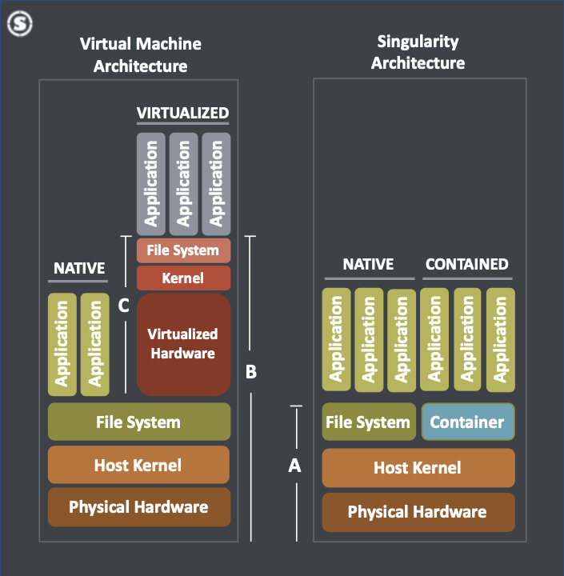

class: left, top, title-slide # Software Containers with Singularity ### Center for Advanced Research Computing <br> University of Southern California <br> ### Last updated on 2023-09-22 --- ## Outline 1. Overview of software containers 2. Obtaining container images (downloading or building) 3. Running containers --- ## Some terminology - **Container image** — executable file saved to storage (immutable blueprint) - **Container** — running instance of a container image - **Container engine** — application that builds and runs container images - **Host system** — system that runs the container engine - **Container registry** — catalog of container images --- ## What is a software container? - A software environment that bundles one or more applications and all their dependencies - OS-level virtualization with process-level isolation on host system - Provides a custom user space separate from host system ```bash Container = Operating system + Libraries + Applications ``` For example: ```bash Container for R = Debian + libcurl,libpng,libopenblas,etc. + R + R packages ``` - Different from a virtual machine - Containers have direct access to the host kernel - Virtual machines have indirect access (performance penalty) --- ## Container architecture  Source: [Singularity Community and SingularityPRO on high-performance servers](https://sylabs.io/download/singularity-community-and-singularitypro-on-high-performance-servers/) --- ## What do containers enable? - A software environment that is: - Shareable - Portable - Stable - Reproducible - Isolated - Secure --- ## Diverse container ecosystem - Container image formats - Docker, LXD, etc. - Singularity - Container engines - Docker, LXC, etc. - Singularity - Container registries - Docker Hub, Quay, etc. - Singularity Cloud Library - Open Container Initiative (OCI) for interoperability - Image format standard - Runtime standard - Distribution standard --- ## Docker vs. Singularity - Docker - Designed for running persistent services (e.g., web apps) - Requires superuser privileges to build and run container images - Singularity - Designed for running HPC workloads - Does not require superuser privileges to run container images - But does require superuser privileges to build container images - Superuser privileges restricted to system admins on shared HPC systems - Both adhere to OCI image format standard - Can convert images from Docker to Singularity format - Or vice versa: [singularity2docker.sh](https://github.com/singularityhub/singularity2docker) --- ## Singularity containers - A container engine designed for HPC and shared HPC systems running Linux - Originally developed at LBNL - Spinoff firm [Sylabs](https://sylabs.io/) with open-core model - SingularityCE (community edition) - SingularityPRO (proprietary edition) - Can be fully isolated from or integrated with host system - Defaults to some integration (e.g., mounting home directory) - Useful for parallel file systems, GPUs, high-speed networks - Most popular container engine for HPC - Alternatives for HPC - [Sarus](https://sarus.readthedocs.io/en/stable/index.html) - [Charliecloud](https://hpc.github.io/charliecloud/) - [Shifter](https://shifter.readthedocs.io/en/latest/) --- ## Why use Singularity for research computing? - Install anything you want (based on any Linux OS) - Ease installation issues by using pre-built container images - Ensure reproducible software environments - Ensure the same software stack is used among a research group - Ensure the same software stack is used across Linux systems (e.g., any HPC center or cloud computing service) - Use older or development versions of software (not available in software modules) - Use proprietary software (typically distributed as binaries) that depends on other software not available on host system - Convert Docker images to Singularity images to run on HPC systems --- ## Limitations of Singularity - Built for Linux systems - Portability depends on a few factors - CPU architecture format (x86 vs. ARM) - Binary format (ELF) - Kernel, glibc, other API compatibility - Not always backward compatible (v2 vs. v3) - Need superuser privileges to build images - No build layer caches --- ## Singularity Image Format (SIF) - A single immutable, compressed, executable image file (`.sif`) - If you need to modify an image, you have to rebuild it or use as base image for a new build - Adheres to OCI image format standard --- ## Accessing Singularity on CARC clusters - Access directly - No software module needed ```bash module purge singularity --version ``` --- ## Obtaining container images - Pull pre-existing images from container registries - Download images from software websites - Build your own custom image --- ## Pulling existing container images - Pull from container registries - [Singularity Cloud Library](https://cloud.sylabs.io/library) ```bash singularity pull library://debian:latest ``` - [Docker Hub](https://hub.docker.com/) ```bash singularity pull docker://python:3.11.5 singularity pull docker://pytorch/pytorch:2.0.1-cuda11.7-cudnn8-runtime ``` --- ## Limited /tmp space - Singularity uses /tmp space when pulling and building images - For large images, the /tmp space may be too small (limited to 1 GB on CARC nodes) - In these cases, use /dev/shm space instead on a compute node (limited by memory request) - Request an interactive job with enough memory - Change location of temporary files with environment variable ```bash salloc -p debug -c 4 --mem=48G export TMPDIR=/dev/shm ``` --- ## Building custom images externally - Need to build outside of CARC systems (requires superuser privileges) - But need a Linux OS - Can build interactively in sandbox mode (keep track of commands) - Will ultimately want to build in batch mode with a definition file (reproducible recipe) - Best option is to use the cloud-based, batch-mode [Singularity Remote Builder](https://cloud.sylabs.io/builder) - May run slow on the free tier - Or use a virtual machine on your local computer (e.g., [Multipass](https://multipass.run/), [Virtual Box](https://www.virtualbox.org/)) - Install a Linux OS - Then install SingularityCE - Could build container images using Docker, and then convert to SIF - Could also use Git-based CI/CD as part of build process --- ## Building workflow 1. Create a definition file 2. Build image externally using the definition file 3. If error occurs, modify definition file and rebuild (back to step 1) 4. Transfer image file to CARC systems 5. Test image 6. If error occurs, modify definition file and rebuild (back to step 1) --- ## Definition files - Recipe for building a container image - Start with a base Linux OS (e.g., Debian, AlmaLinux, etc.) - Or start with any existing container image from a registry - Then install software, add files, etc. - Similar to a Dockerfile, but different syntax - For reproducibility purposes, document and version control definition files - [CARC Singularity template definition files](https://github.com/uschpc/singularities) --- ## Structure of a definition file ```bash # Header (required) Bootstrap: ... From: ... # Sections (optional) %files Copy files to the container from host (/source /destination) %post Install software and libraries, write configuration files, etc. %test Run commands to validate build process %environment Define environment variables that will be set at runtime %startscript Run commands when singularity instance start command is used %runscript Run commands when singularity run command is used %labels Add metadata labels (name-value pair) %help Describe the container and its intended use ``` --- ## Example definition file ```bash Bootstrap: docker From: clearlinux/r-base:latest %post swupd update --quiet swupd bundle-add --quiet R-stan swupd clean --all %test R --version %environment export LC_ALL=C %runscript R %help Clear Linux with latest version of R linked to OpenBLAS and rstan package installed. ``` --- ## Using Singularity Remote Builder - [Singularity Container Services](https://cloud.sylabs.io) by [Sylabs](https://www.sylabs.io) - Free service with limits - 11 GB of storage space - 1000 minutes per month of build time - Log in with other account (GitHub, GitLab, Google, Microsoft) - Set up [access token](https://cloud.sylabs.io/tokens) on CARC systems - Use web interface to build - Or build remotely from the command line ```bash singularity remote login singularity build --remote rstan.sif rstan.def ``` --- ## Installing optimized software - Tradeoff between portability and performance - Choice of base OS for an image can be important for performance - Using Linux package managers (e.g., APT, DNF) typically downloads generic binaries - APT provides [apt-build](https://manpages.debian.org/bullseye/apt-build/apt-build.1.en.html) to build packages from source with CPU architecture optimizations - Clear Linux swupd package manager provides optimized builds for Intel CPU architectures (limited software choices) - [Spack](https://spack.readthedocs.io/en/latest/index.html) can be used to build and [containerize](https://spack.readthedocs.io/en/latest/containers.html) optimized software stacks --- ## Multi-stage builds - Singularity also supports [multi-stage builds](https://sylabs.io/guides/latest/user-guide/definition_files.html#multi-stage-builds) - Primary use case is to minimize final image size - Build main application in the first stage (requiring build-time dependencies) - Copy compiled binary to a clean environment in the second stage (requiring run-time dependencies) - So final image does not contain unneeded build tools --- ## Image cache - Images are cached when you pull them, which uses storage space - By default, the cache is located at `~/.singularity/cache` - Change location of cache directory with environment variable: ```bash export SINGULARITY_CACHEDIR=/scratch1/<username>/singularity ``` - List and clean the cache: ```bash singularity cache list singularity cache clean ``` --- ## Inspecting container images - See the definition file used to build the image: ```bash singularity inspect --deffile python.sif ``` - See the environment variables set when running the container: ```bash singularity inspect --environment python.sif ``` - See the runscript for the container: ```bash singularity inspect --runscript python.sif ``` --- ## Running containers - Containers can be run in interactive or batch modes - Various options can be used to isolate/integrate with host system - A container process is like any other Linux process - Command for an interactive shell within the container: ```bash singularity shell [options] <container> ``` - Command for batch executing commands within the container: ```bash singularity exec [options] <container> <commands> ``` - Command for running a pre-defined runscript within the container: ```bash singularity run [options] <container> ``` --- ## Running containers examples - Run container in interactive mode: ```bash singularity shell python.sif ``` - Run container in batch mode: ```bash singularity exec python.sif python -c 'print("Hello world")' singularity exec python.sif python script.py ``` - Run container's runscript: ```bash singularity run python.sif ``` --- ## File system within containers - Unique file system within a container - `/bin` - `/lib` - `/usr` - Some directories from the host system are automatically mounted to the container - `/home1/<username>` - `/tmp` - `/var/tmp` - `/proc` - `/sys` - `/dev` --- ## Bind mounting directories to containers - Use the `--bind` option to mount files or directories - For example, to add your current working directory and `/scratch1` directory: ```bash singularity exec --bind $PWD,/scratch1/<username> python.sif python script.py ``` - Can change name when binding if needed: ```bash singularity exec --bind $PWD:/mydir python.sif python script.py ``` - Can use environment variable instead: ```bash export SINGULARITY_BIND=/scratch1/<username>,/project/<project_id> singularity exec python.sif python script.py ``` --- ## Other useful options - Often a good idea to use `--cleanenv` (or shorter `-e`) - Use `--containall` for maximum isolation from host system - May need to use `--no-home` to exclude `/home1` directory - e.g., for Python or R containers - Packages are installed in your home directory by default - Can lead to conflicts with software installed in container ```bash singularity exec --cleanenv --no-home --bind $PWD python.sif python script.py ``` --- ## Running containers using GPUs - Containers need to access host GPU driver - Use `--nv` option to access NVIDIA GPUs - Run `nvidia-smi` on NVIDIA GPU node to see current driver version and compatibility - Use `--rocm` option to access AMD ROCm GPUs (none on CARC clusters) - [GPU support docs](https://sylabs.io/guides/latest/user-guide/gpu.html) - For example, a PyTorch script using NVIDIA GPU: ```bash singularity exec --nv --no-home --bind $PWD pytorch.sif python script.py ``` --- ## Running containers using MPI - Two approaches: hybrid vs. mount - Pros and cons for each approach - Less portable because it depends on MPI versions available on host system - [MPI support docs](https://sylabs.io/guides/latest/user-guide/mpi.html) - For example, an OpenMPI program: ```bash srun --mpi=pmix_v2 -n $SLURM_NTASKS singularity exec openmpi.sif ./mpi_program ``` --- ## Singularity environment variables - Some useful environment variables can be set - Add to `~/.bashrc` to automatically set every time you log in - See full list [here](https://docs.sylabs.io/guides/latest/user-guide/appendix.html#singularityce-s-environment-variables) --- ## Example Slurm job script ```bash #!/bin/bash #SBATCH --account=<project_id> #SBATCH --partition=main #SBATCH --nodes=1 #SBATCH --ntasks=1 #SBATCH --cpus-per-task=8 #SBATCH --mem=16G #SBATCH --time=1:00:00 module purge singularity exec --cleanenv --no-home --bind $PWD python.sif python script.py ``` --- ## Example Slurm job script using GPU ```bash #!/bin/bash #SBATCH --account=<project_id> #SBATCH --partition=gpu #SBATCH --nodes=1 #SBATCH --ntasks=1 #SBATCH --cpus-per-task=8 #SBATCH --gpus-per-task=v100:1 #SBATCH --mem=16G #SBATCH --time=1:00:00 module purge singularity exec --nv --cleanenv --no-home --bind $PWD pytorch.sif python script.py ``` --- ## Singularity documentation - [Official docs](https://sylabs.io/guides/latest/user-guide/) - Command-line help: ```bash singularity help singularity help shell singularity help exec singularity help run ``` --- ## Additional resources - [Singularity website](https://sylabs.io/singularity) - [Singularity documentation](https://sylabs.io/guides/master/user-guide/) - [Singularity tutorial](https://sylabs.github.io/singularity101/) - [Singularity Remote Builder](https://cloud.sylabs.io/builder) Container registries: - [Singularity Cloud Library](https://cloud.sylabs.io/library) - [Docker Hub](https://hub.docker.com/) - [BioContainers](https://biocontainers.pro) - [Dockstore](https://www.dockstore.org/) - [Intel oneContainer Portal](https://www.intel.com/content/www/us/en/developer/tools/containers/overview.html) - [NVIDIA GPU Cloud Catalog](https://ngc.nvidia.com/catalog) --- ## CARC support - [Using Singularity on CARC HPC clusters](https://www.carc.usc.edu/user-information/user-guides/software-and-programming/singularity) - [CARC Singularity template definition files](https://github.com/uschpc/singularities) - [Submit a support ticket](https://www.carc.usc.edu/user-information/ticket-submission) - Office Hours - Every Tuesday 2:30-5pm - Get Zoom link [here](https://www.carc.usc.edu/education-and-resources/office-hours) --- ## Exercises - Pull a container image from a registry - Build a custom container image - Create a definition file - Use the Remote Builder to build the custom image - Transfer the image to a CARC file system - Inspect a container image - Bind mount a `/project` directory to a container and list its files - Run a script or program through a container